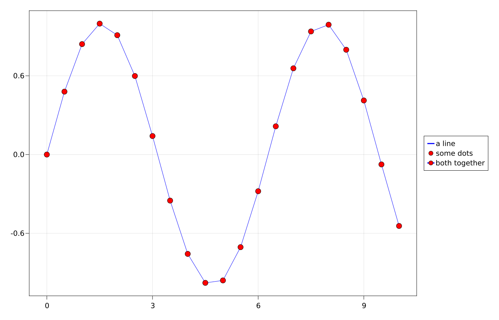
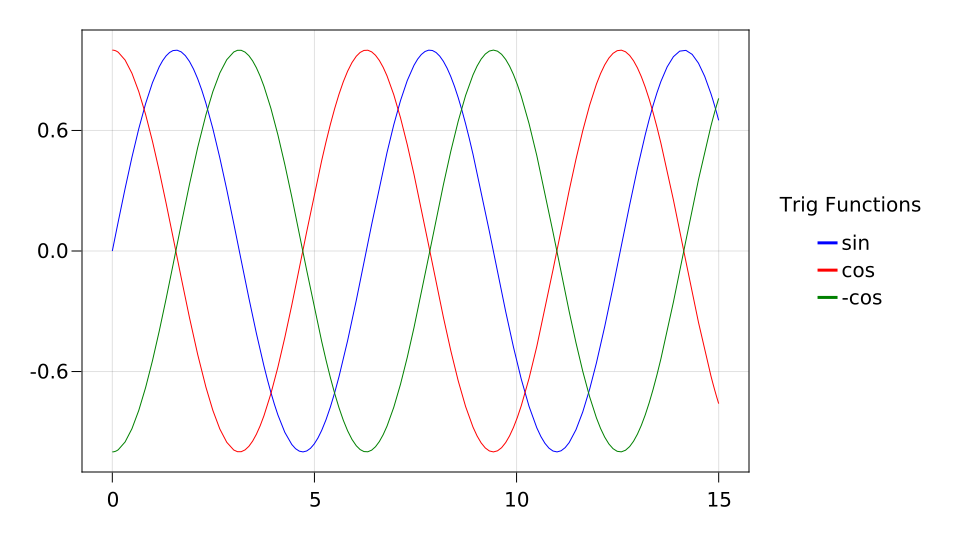
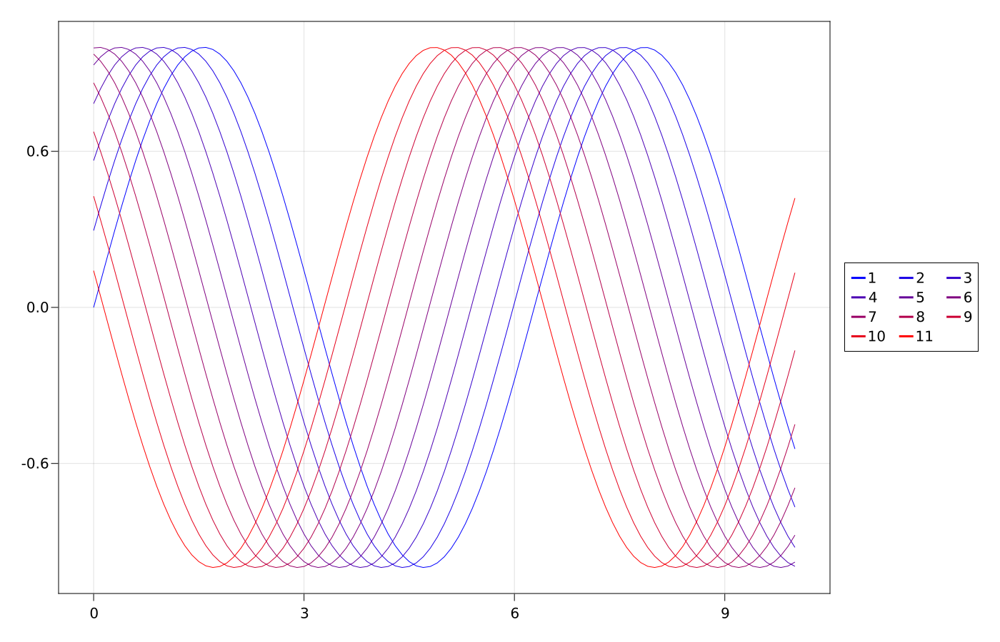
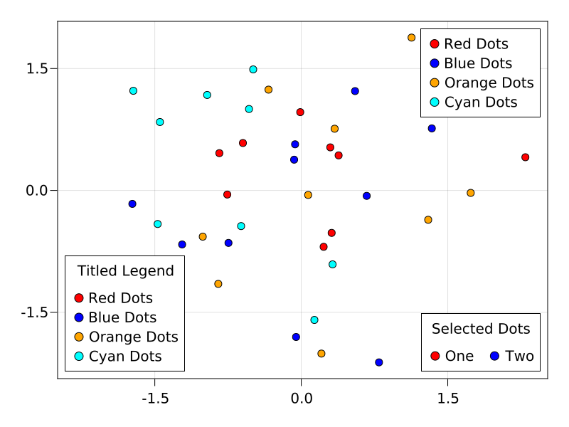
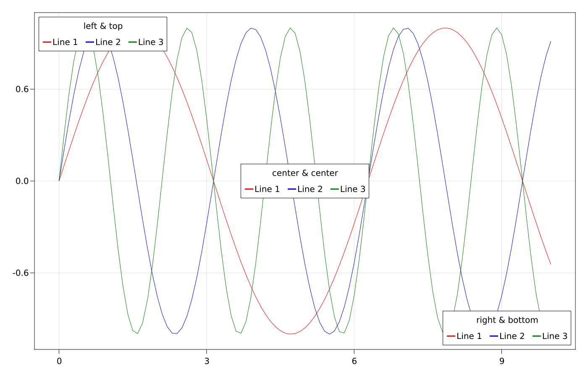
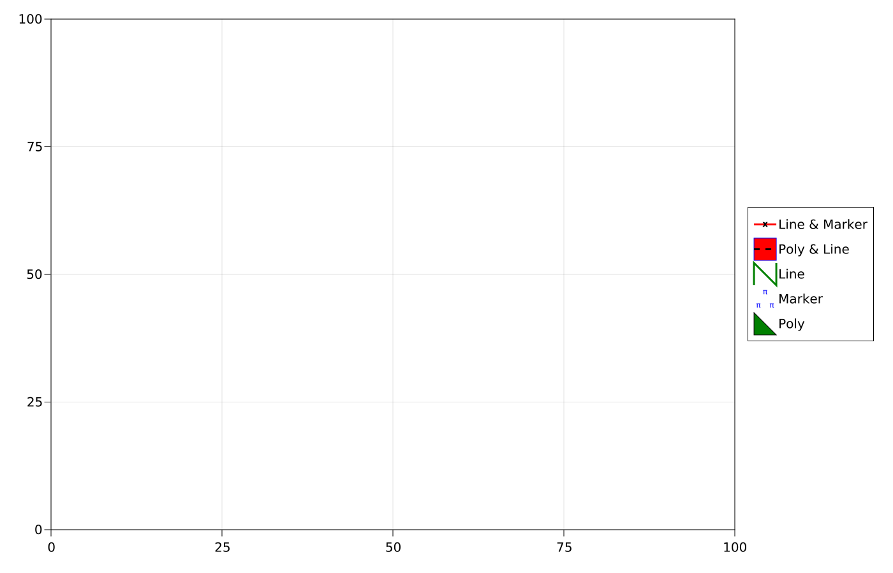
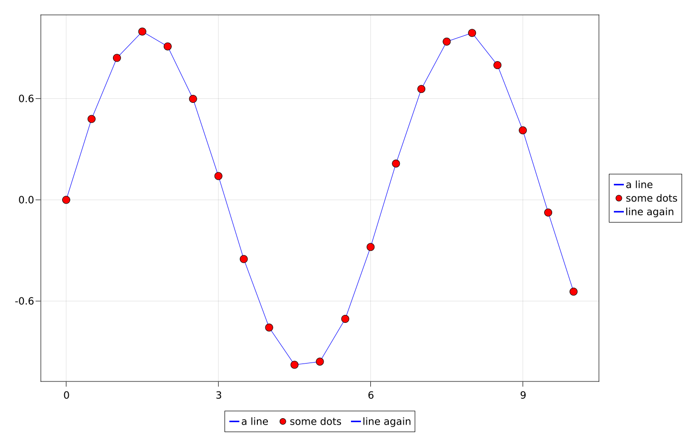
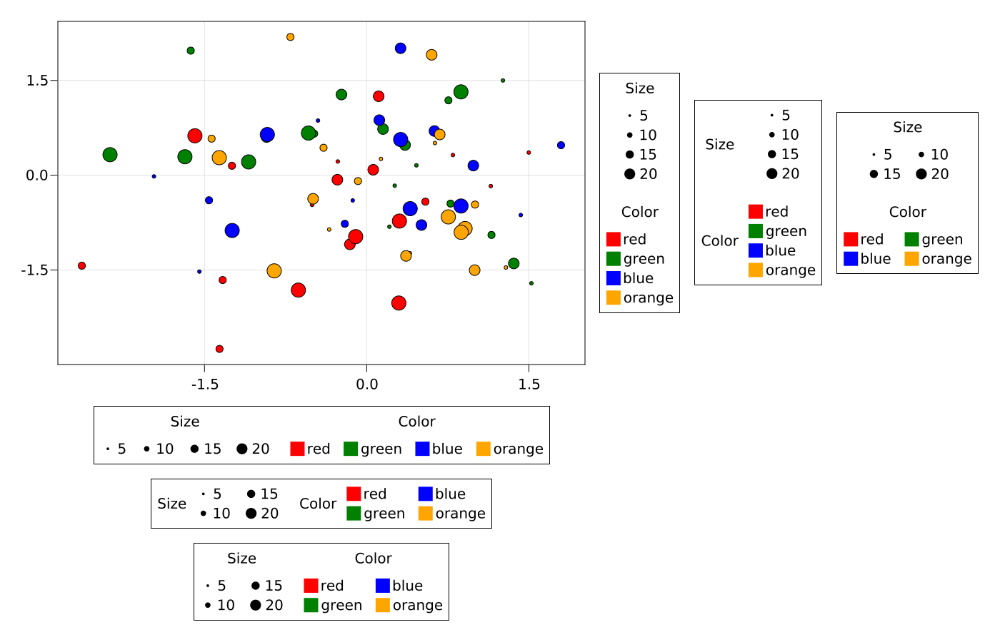

Creating A Legend From Elements
You can create a basic Legend by passing a vector of legend entries and a vector of labels, plus an optional title as the third argument.
The elements in the vector of legend entries can either be plot objects or LegendElements like LineElement, MarkerElement and PolyElement. Or they can be vectors of such objects that will be layered together as one.
using CairoMakie
scene, layout = layoutscene(resolution = (1400, 900))
ax = layout[1, 1] = Axis(scene)
xs = 0:0.5:10
ys = sin.(xs)
lin = lines!(ax, xs, ys, color = :blue)
sca = scatter!(ax, xs, ys, color = :red, markersize = 15)
leg = Legend(scene, [lin, sca, [lin, sca]], ["a line", "some dots", "both together"])
layout[1, 2] = leg
Creating A Legend From An Axis
You can also create a Legend by passing it an axis object, like Axis, LScene or Scene. All plots that have a label attribute set will be put into the legend, in the order that they appear in the axis, and you can optionally pass a title as the third argument.
using CairoMakie
f = Figure()
ax = f[1, 1] = Axis(f)
lines!(0..15, sin, label = "sin", color = :blue)
lines!(0..15, cos, label = "cos", color = :red)
lines!(0..15, x -> -cos(x), label = "-cos", color = :green)
f[1, 2] = Legend(f, ax, "Trig Functions", framevisible = false)
Multi-Bank Legend
You can control the number of banks with the nbanks attribute. Banks are columns when in vertical mode, and rows when in horizontal mode.
using CairoMakie
scene, layout = layoutscene(resolution = (1400, 900))
ax = layout[1, 1] = Axis(scene)
xs = 0:0.1:10
lins = [lines!(ax, xs, sin.(xs .+ 3v), color = RGBf0(v, 0, 1-v)) for v in 0:0.1:1]
leg = Legend(scene, lins, string.(1:length(lins)), nbanks = 3)
layout[1, 2] = leg
Legend Inside An Axis
The axislegend function is a quick way to add a legend to an Axis. You can pass a selected axis plus arguments which are forwarded to the Legend constructor, or the current axis is used by default. If you pass only a string, it's used as the title with the current axis.
The position can be set via a shortcut symbol, first halign (l, r, c) then valign (b, t, c), such as :lt for left, top and :cb for center bottom.
using CairoMakie
f = Figure(resolution = (800, 600))
ax = Axis(f[1, 1])
sc1 = scatter!(randn(10, 2), color = :red, label = "Red Dots")
sc2 = scatter!(randn(10, 2), color = :blue, label = "Blue Dots")
scatter!(randn(10, 2), color = :orange, label = "Orange Dots")
scatter!(randn(10, 2), color = :cyan, label = "Cyan Dots")
axislegend()
axislegend("Titled Legend", position = :lb)
axislegend(ax, [sc1, sc2], ["One", "Two"], "Selected Dots", position = :rb,
orientation = :horizontal)
Alternatively, you can simply add a Legend to the same layout slot that an axis lives in. As long as the axis is bigger than the legend you can set the legend's tellheight and tellwidth to false and position it using the align variables. You can use the margin keyword to keep the legend from touching the axis spines.
using CairoMakie
haligns = [:left, :right, :center]
valigns = [:top, :bottom, :center]
scene, layout = layoutscene(resolution = (1400, 900))
ax = layout[1, 1] = Axis(scene)
xs = 0:0.1:10
lins = [lines!(ax, xs, sin.(xs .* i), color = color)
for (i, color) in zip(1:3, [:red, :blue, :green])]
legends = [Legend(
scene, lins, ["Line $i" for i in 1:3],
"$ha & $va",
tellheight = false,
tellwidth = false,
margin = (10, 10, 10, 10),
halign = ha, valign = va, orientation = :horizontal
) for (j, ha, va) in zip(1:3, haligns, valigns)]
for leg in legends
layout[1, 1] = leg
end
Creating Legend Entries Manually
Sometimes you might want to construct legend entries from scratch to have maximum control. So far you can use LineElements, MarkerElements or PolyElements. Some attributes that can't have a meaningful preset and would usually be inherited from plot objects (like color) have to be explicitly specified. Others are inherited from the legend if they are not specified. These include marker arrangement for MarkerElements or poly shape for PolyElements. You can check the list using this function:
using AbstractPlotting
MakieLayout.attributenames(LegendEntry)(:label, :labelsize, :labelfont, :labelcolor, :labelhalign, :labelvalign, :patchsize, :patchstrokecolor, :patchstrokewidth, :patchcolor, :linepoints, :markerpoints, :markersize, :markerstrokewidth, :linewidth, :polypoints, :polystrokewidth)
using CairoMakie
scene, layout = layoutscene(resolution = (1400, 900))
ax = layout[1, 1] = Axis(scene)
elem_1 = [LineElement(color = :red, linestyle = nothing),
MarkerElement(color = :blue, marker = 'x', strokecolor = :black)]
elem_2 = [PolyElement(color = :red, strokecolor = :blue),
LineElement(color = :black, linestyle = :dash)]
elem_3 = LineElement(color = :green, linestyle = nothing,
linepoints = Point2f0[(0, 0), (0, 1), (1, 0), (1, 1)])
elem_4 = MarkerElement(color = :blue, marker = 'π',
strokecolor = :transparent,
markerpoints = Point2f0[(0.2, 0.2), (0.5, 0.8), (0.8, 0.2)])
elem_5 = PolyElement(color = :green, strokecolor = :black,
polypoints = Point2f0[(0, 0), (1, 0), (0, 1)])
leg = layout[1, 2] = Legend(scene,
[elem_1, elem_2, elem_3, elem_4, elem_5],
["Line & Marker", "Poly & Line", "Line", "Marker", "Poly"],
patchsize = (35, 35))
Horizontal Legend
In case you want the legend entries to be listed horizontally, set the orientation attribute to :horizontal. In this case the nbanks attribute refers to the number of rows instead of columns. To keep an adjacent axis from potentially shrinking to the width of the horizontal legend, set tellwidth = false and tellheight = true if you place the legend below or above the axis.
using CairoMakie
scene, layout = layoutscene(resolution = (1400, 900))
ax = layout[1, 1] = Axis(scene)
xs = 0:0.5:10
ys = sin.(xs)
lin = lines!(ax, xs, ys, color = :blue)
sca = scatter!(ax, xs, ys, color = :red, markersize = 15)
leg = Legend(scene, [lin, sca, lin], ["a line", "some dots", "line again"])
layout[1, 2] = leg
leg_horizontal = Legend(scene, [lin, sca, lin], ["a line", "some dots", "line again"],
orientation = :horizontal, tellwidth = false, tellheight = true)
layout[2, 1] = leg_horizontal
Multi-Group Legends
Sometimes a legend consists of multiple groups, for example in a plot where both marker size and color are varied and those properties need to be visualized separately, but still together in one legend. Each group's content is given as an array of elements and an array of labels, each within one collective array. You can shift the position of the titles relative to each group with the titleposition attribute, either :left or :top.
using CairoMakie
scene, layout = layoutscene(resolution = (1400, 900))
ax = layout[1, 1] = Axis(scene)
markersizes = [5, 10, 15, 20]
colors = [:red, :green, :blue, :orange]
for ms in markersizes, color in colors
scatter!(ax, randn(5, 2), markersize = ms, color = color)
end
group_size = [MarkerElement(marker = :circle, color = :black, strokecolor = :transparent,
markersize = ms) for ms in markersizes]
group_color = [PolyElement(color = color, strokecolor = :transparent)
for color in colors]
legends = [Legend(scene,
[group_size, group_color],
[string.(markersizes), string.(colors)],
["Size", "Color"]) for _ in 1:6]
layout[1, 2:4] = legends[1:3]
layout[2:4, 1] = legends[4:6]
for l in legends[4:6]
l.orientation = :horizontal
l.tellheight = true
l.tellwidth = false
end
legends[2].titleposition = :left
legends[5].titleposition = :left
legends[3].nbanks = 2
legends[5].nbanks = 2
legends[6].nbanks = 2
scene